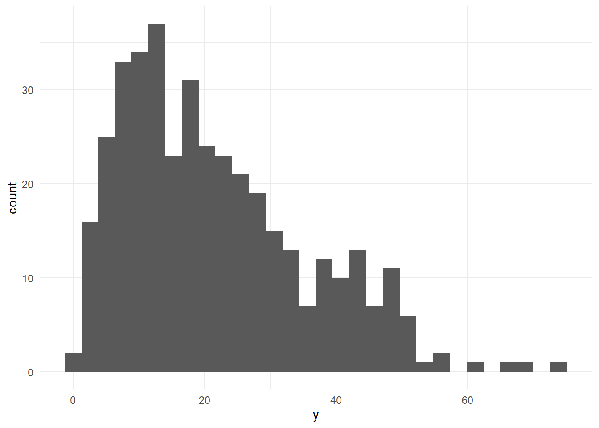
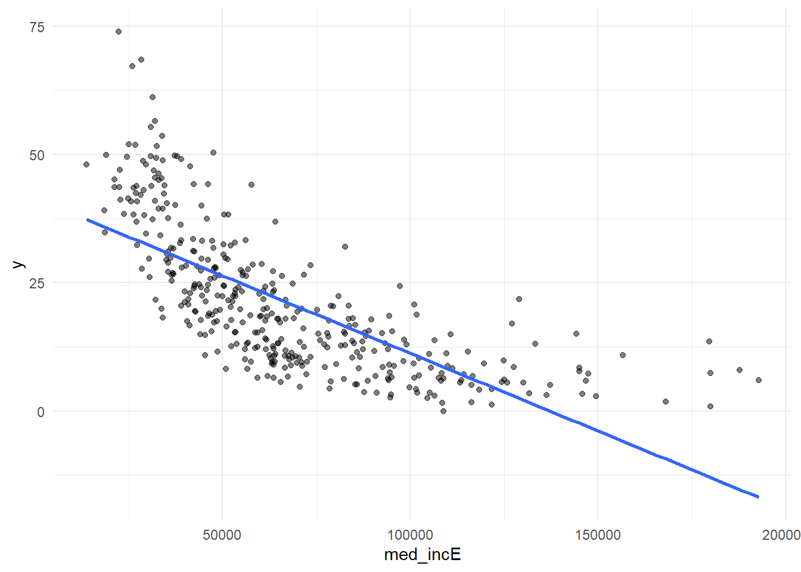
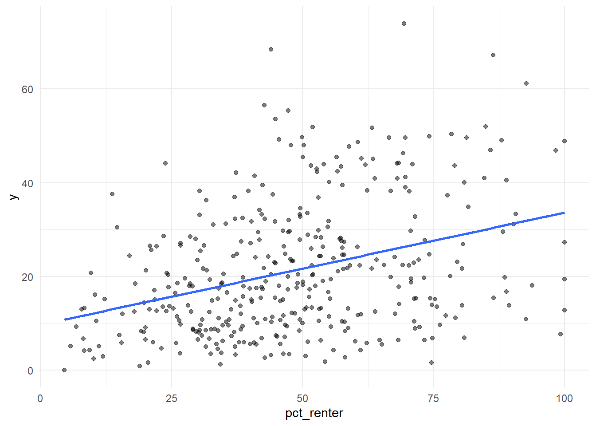
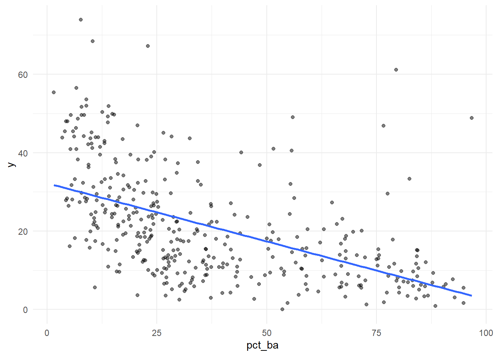
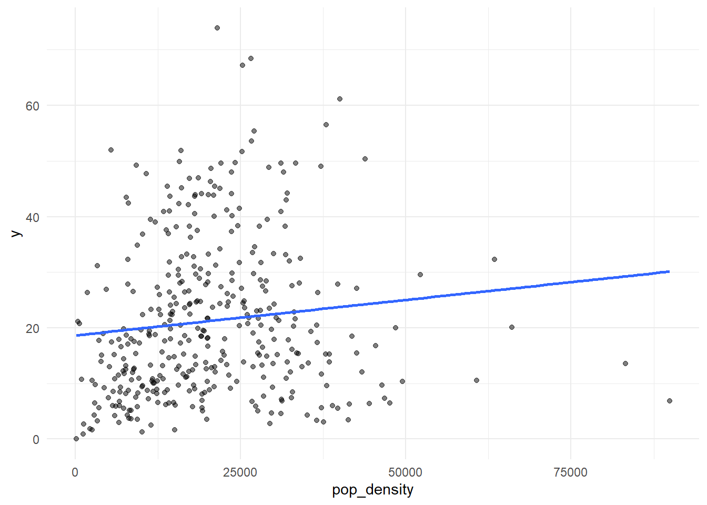
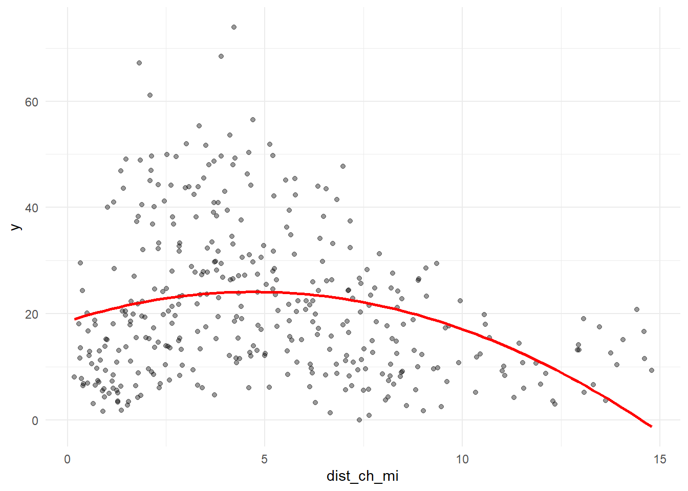
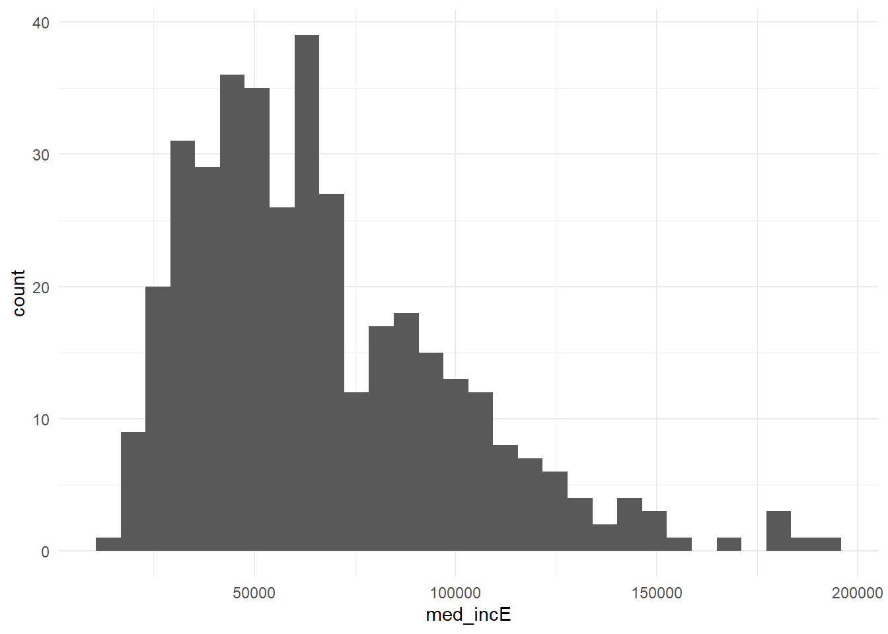
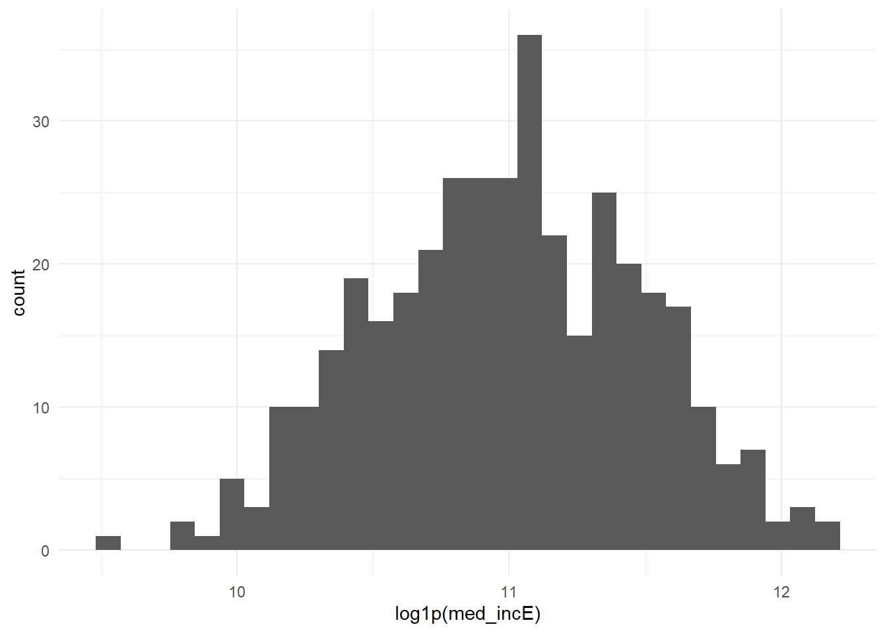
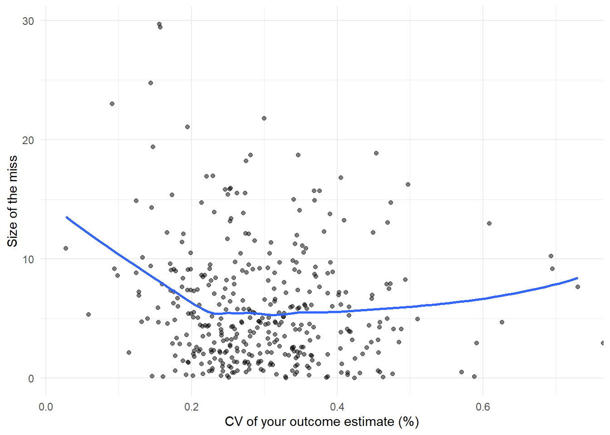

Code
library(tidyverse)
library(tidycensus)
library(sf)
library(caret)
Sys.getenv("CENSUS_API_KEY") != "" # should print TRUE[1] TRUEMUSA 5080 · Integrates Weeks 1–5 · Due Friday, October 16
This is not a competition. There’s no leaderboard and no target RMSE. The goal is to practice the full prediction workflow on a question you choose, and to find out what actually helps. Some features you’re sure will help won’t, and some you add on a whim will. Both are findings.
You’ll:
Timing. Parts 1–4 use only what we’ve covered through Week 5. You can finish them before the October 9 lecture. Part 5 is new material; the lecture explains it, and the instructions below give you the essentials.
Type the code yourself. The worked examples show the pattern. Your job is to apply it to your outcome and your data choices.
Every model is cross-validated on the same tracts with the same folds, so the rows in your model log are comparable. If a new variable has missing values, fill them (for example, 0 for a count, or the median with a note) or choose a different variable. The cv_rmse() helper below will stop and tell you if you break this rule.
Your outcome comes from the 2019–2023 ACS. Pull open data from 2023 or earlier (2021–2023 is ideal). Using 2025 data to predict a 2023 outcome uses information from the future, which a real prediction model would never have.
Don’t use any variable that’s built from your outcome or measures the same thing another way. Ask yourself: would an agency trying to predict this outcome for a tract have this variable? If the answer is “only because it’s basically the outcome,” leave it out.
library(tidyverse)
library(tidycensus)
library(sf)
library(caret)
Sys.getenv("CENSUS_API_KEY") != "" # should print TRUE[1] TRUEThis function runs 10-fold cross-validation with the same seed every time, so every model in your log is tested on the same folds. You don’t need to change it. Read it once so you know what it does.
ctrl <- trainControl(method = "cv", number = 10)
cv_rmse <- function(formula, data) {
df <- if (inherits(data, "sf")) st_drop_geometry(data) else data
vars <- all.vars(formula)
bad <- vars[sapply(vars, function(v) any(is.na(df[[v]])))]
if (length(bad) > 0) {
stop("These variables have NAs: ", paste(bad, collapse = ", "),
". Fill them or choose another variable (Rule 1: don't drop rows).")
}
set.seed(5080)
fit <- train(formula, data = df, method = "lm", trControl = ctrl)
fit$results$RMSE
}Every time you fit a new model, add a row. By the end, this table is the story of your assignment.
model_log <- tibble(
model = character(),
added = character(),
cv_rmse = numeric(),
notes = character()
)Pick a tract-level ACS variable for Philadelphia that matters for policy. Two outcomes are off limits: median gross rent (we did it in lab) and median home value (save it for A4).
Some ideas if you’re stuck:
| Outcome | Why an agency might care | ACS table |
|---|---|---|
| % of households with no vehicle | Transit planning | B08201 or B25044 |
| Mean travel time to work | Access to jobs | B08013_001 ÷ B08303_001 |
| % of people below poverty | Targeting services | B17001 |
| % of housing units vacant | Housing and blight | B25002 |
| % of households overcrowded | Housing co nditions | B25014 |
Use load_variables(2023, "acs5") to browse and find exact variable codes.
Choose three to five ACS predictors for your baseline model. They should be things that plausibly relate to your outcome, but none of them may be built from your outcome (Rule 3).
philly_tracts <- get_acs(
geography = "tract",
state = "PA",
county = "Philadelphia",
variables = c(
poverty_total = "B17001_001",
below_poverty = "B17001_002",
total_pop = "B01003_001",
med_inc = "B19013_001",
occ_units = "B25003_001",
renter_occ = "B25003_003",
edu_total = "B15003_001",
ba = "B15003_022",
ma = "B15003_023",
prof = "B15003_024",
phd = "B15003_025"
),
year = 2023,
output = "wide",
geometry = TRUE
) %>%
sf::st_transform(2272)
|
| | 0%
|
|= | 1%
|
|== | 2%
|
|== | 3%
|
|=== | 4%
|
|=== | 5%
|
|==== | 5%
|
|==== | 6%
|
|===== | 7%
|
|====== | 8%
|
|====== | 9%
|
|======= | 10%
|
|======= | 11%
|
|======== | 11%
|
|======== | 12%
|
|========= | 13%
|
|========== | 14%
|
|=========== | 15%
|
|=========== | 16%
|
|============ | 17%
|
|============= | 18%
|
|============= | 19%
|
|============== | 20%
|
|=============== | 21%
|
|=============== | 22%
|
|================ | 23%
|
|================ | 24%
|
|================= | 25%
|
|================== | 25%
|
|=================== | 26%
|
|=================== | 27%
|
|==================== | 28%
|
|===================== | 29%
|
|===================== | 30%
|
|====================== | 31%
|
|======================= | 32%
|
|======================= | 33%
|
|======================== | 34%
|
|========================= | 35%
|
|========================= | 36%
|
|========================== | 37%
|
|=========================== | 38%
|
|=========================== | 39%
|
|============================ | 40%
|
|============================= | 41%
|
|============================== | 42%
|
|============================== | 43%
|
|=============================== | 44%
|
|================================ | 45%
|
|================================ | 46%
|
|================================= | 47%
|
|================================== | 48%
|
|================================== | 49%
|
|=================================== | 50%
|
|==================================== | 51%
|
|===================================== | 52%
|
|===================================== | 53%
|
|====================================== | 54%
|
|====================================== | 55%
|
|======================================= | 56%
|
|======================================== | 57%
|
|========================================= | 58%
|
|========================================= | 59%
|
|========================================== | 60%
|
|=========================================== | 61%
|
|=========================================== | 62%
|
|============================================ | 63%
|
|============================================= | 64%
|
|============================================= | 65%
|
|============================================== | 66%
|
|=============================================== | 67%
|
|=============================================== | 68%
|
|================================================ | 69%
|
|================================================= | 70%
|
|================================================= | 71%
|
|================================================== | 72%
|
|=================================================== | 73%
|
|=================================================== | 74%
|
|==================================================== | 75%
|
|===================================================== | 76%
|
|====================================================== | 76%
|
|====================================================== | 77%
|
|======================================================= | 78%
|
|======================================================== | 79%
|
|======================================================== | 80%
|
|========================================================= | 81%
|
|========================================================== | 82%
|
|========================================================== | 83%
|
|=========================================================== | 84%
|
|============================================================ | 85%
|
|============================================================ | 86%
|
|============================================================= | 87%
|
|============================================================== | 88%
|
|============================================================== | 89%
|
|=============================================================== | 90%
|
|================================================================ | 91%
|
|================================================================= | 92%
|
|================================================================= | 93%
|
|================================================================== | 94%
|
|=================================================================== | 95%
|
|=================================================================== | 96%
|
|==================================================================== | 97%
|
|===================================================================== | 98%
|
|===================================================================== | 99%
|
|======================================================================| 100%philly_tracts <- philly_tracts %>%
mutate(
y = below_povertyE / poverty_totalE * 100,
y_moe = moe_prop( below_povertyE,
poverty_totalE,
below_povertyM, poverty_totalM ),
y_cv = (y_moe / 1.645) / y * 100, pct_renter = renter_occE / occ_unitsE * 100,
pct_ba = (baE + maE + profE + phdE) / edu_totalE * 100,
area_sqmi = as.numeric(st_area(.)) / 27878400,
pop_density = total_popE / area_sqmi
)Before you commit, check three things.
# How many tracts have no value for your outcome? 19
sum(is.na(philly_tracts$y))[1] 19# How reliable is it? The median reliability measure (y_cv) is 0.2805, but the mean and maximum are infinite since some tracts have a poverty rate of zero.
summary(philly_tracts$y_cv) Min. 1st Qu. Median Mean 3rd Qu. Max. NAs
0.0274 0.2252 0.2805 Inf 0.3532 Inf 19 philly_tracts %>%
mutate(reliability = case_when(
y_cv < 12 ~ "High",
y_cv <= 40 ~ "Moderate",
TRUE ~ "Low"
)) %>%
st_drop_geometry() %>%
count(reliability) reliability n
1 High 388
2 Low 20# What does the distribution look like?
ggplot(philly_tracts, aes(x = y)) +
geom_histogram(bins = 30) +
theme_minimal()
If more than about a third of tracts have low reliability, consider a different outcome, or one built from larger counts. Write your reasoning either way.
reliability n 1 High 388 2 Low 20
Answer (2–3 sentences): What is your outcome, why would an agency want to predict it, and how reliable is it?
Your answer: My outcome is census tract poverty rate, and is calculated as the percentage of people living below the poverty rate. An agency would want to predict the poverty rate to identify areas across Philadelphia with greater need for services and resources. For the 408 total tracts, 388 where of high reliability, and 20 were at low reliability for a total of 4.9% in low reliability.
Filter once, here, and never again. Every later step uses tracts.
This code chunk here is plugging in my
tracts <- philly_tracts %>%
filter(total_popE > 0,
!is.na(y),
!is.na(med_incE),
!is.na(pct_renter),
!is.na(pct_ba),
!is.na(pop_density)
)
nrow(philly_tracts)[1] 408nrow(tracts)[1] 381philly_tracts %>%
st_drop_geometry() %>%
summarise(
missing_y = sum(is.na(y)),
missing_income = sum(is.na(med_incE)),
missing_renter = sum(is.na(pct_renter)),
missing_education = sum(is.na(pct_ba)),
missing_density = sum(is.na(pop_density)),
zero_population = sum(total_popE <= 0, na.rm = TRUE)
) missing_y missing_income missing_renter missing_education missing_density
1 19 27 20 17 0
zero_population
1 17Answer: How many tracts did you lose, and what kinds of places are they?
Your answer: I lost 27 tracts out of 408. The excluded tracts had missing values for one or more of the poverty, income, renter, or education variables, or had zero population identified. 17of the excluded tracts had zero-population recorded and so most likely are places with little residental development, perhaps wilderness.
Plot your outcome against each predictor before modeling (the Week 3 habit).
ggplot(tracts, aes(x = med_incE, y = y)) + geom_point(alpha = 0.5) +
geom_smooth(method = "lm", se = FALSE) + theme_minimal()
ggplot(tracts, aes(x = pct_renter, y = y)) + geom_point(alpha = 0.5) +
geom_smooth(method = "lm", se = FALSE) + theme_minimal()
ggplot(tracts, aes(x = pct_ba, y = y)) + geom_point(alpha = 0.5) +
geom_smooth(method = "lm", se = FALSE) + theme_minimal()
ggplot(tracts, aes(x = pop_density, y = y)) + geom_point(alpha = 0.5) +
geom_smooth(method = "lm", se = FALSE) + theme_minimal()
library(caret)
ctrl <- trainControl(method = "cv", number = 10)
cv_rmse <- function(formula, data) {
df <- if (inherits(data, "sf")) st_drop_geometry(data) else data
vars <- all.vars(formula)
bad <- vars[sapply(vars, function(v) any(is.na(df[[v]])))]
if (length(bad) > 0) stop("These variables have NAs: ", paste(bad, collapse=", "), ". Fill them or choose another variable (Rule 1: don't drop rows).")
set.seed(5080)
fit <- train(formula, data=df, method="lm", trControl=ctrl)
fit$results$RMSE
}model_log <- tibble(
model = character(),
added = character(),
cv_rmse = double(),
notes = character()
)
f1 <- y ~ med_incE + pct_renter + pct_ba
m1 <- lm(f1, data = tracts)
summary(m1)
Call:
lm(formula = f1, data = tracts)
Residuals:
Min 1Q Median 3Q Max
-22.459 -6.477 -0.936 5.143 36.868
Coefficients:
Estimate Std. Error t value Pr(>|t|)
(Intercept) 2.977e+01 2.144e+00 13.885 < 2e-16 ***
med_incE -1.933e-04 2.871e-05 -6.734 6.18e-11 ***
pct_renter 1.974e-01 3.120e-02 6.327 7.10e-10 ***
pct_ba -1.382e-01 3.769e-02 -3.668 0.00028 ***
---
Signif. codes: 0 '***' 0.001 '**' 0.01 '*' 0.05 '.' 0.1 ' ' 1
Residual standard error: 9.298 on 377 degrees of freedom
Multiple R-squared: 0.5601, Adjusted R-squared: 0.5566
F-statistic: 160 on 3 and 377 DF, p-value: < 2.2e-16model_log <- model_log %>%
add_row(model = "m1", added = "ACS baseline",
cv_rmse = cv_rmse(f1, tracts),
notes = "Median income, renter percentage, and bachelor's degree or higher")
model_log# A tibble: 1 × 4
model added cv_rmse notes
<chr> <chr> <dbl> <chr>
1 m1 ACS baseline 9.28 Median income, renter percentage, and bachelor's d…Write the CV RMSE as a sentence, in your outcome’s units: “On tracts it hasn’t seen, the baseline model misses by about 9.28 percentage points.”
Save this map. You’ll compare it to your final model’s map in Part 6.
I inputted my map into the bottom by my final map for better comparrison…
Answer: Where do the residuals cluster? What might those places have in common that your model doesn’t know about? Use this answer to choose your open data layers in Part 3.
Your answer: The residuals cluster in central Philadelphia: in the North Philly and Center City areas. The red areas have higher actual poverty than predicted while the blue areas have actual poverty less than predicted.Since North Philly and center city are densely populated and vary widely in diversity of communities across each area, there are certainly some neighborhood factors that the areas might have in common. Measuring access to public transpiration, access to public services, and access to grocery stores will be importiant for improving the model.
Many of the city’s datasets on OpenDataPhilly are served through a Carto SQL API. You send a SQL query in a URL, and it sends back data. Ask for format=GeoJSON and st_read() reads the result directly, just like the Indego feed in Week 4.
The pattern:
https://phl.carto.com/api/v2/sql?format=GeoJSON&q=SELECT ... FROM table_name WHERE ...Three pieces of SQL are all you need:
SELECT the_geom, column1, column2 chooses which columns come back. Always include the_geom, or you get no geometry.FROM table_name chooses the dataset.WHERE ... filters rows. Filter in the query, not in R. Some tables have millions of rows, and pulling everything will be slow or fail.This helper builds the URL for you. Spaces and symbols in a URL need encoding, and URLencode() handles that.
carto_get <- function(sql) {
url <- paste0("https://phl.carto.com/api/v2/sql?format=GeoJSON&q=", URLencode(sql))
st_read(url, quiet = TRUE)
}On a dataset’s OpenDataPhilly page, look for the API link. The table name is the word after FROM in the example query. To see what values a column takes before you filter on it, ask for a count in CSV format:
# What kinds of crime are in the incidents table in 2023?
url <- paste0("https://phl.carto.com/api/v2/sql?format=csv&q=",
URLencode("SELECT text_general_code, COUNT(*) AS n
FROM incidents_part1_part2
WHERE dispatch_date >= '2023-01-01' AND dispatch_date < '2024-01-01'
GROUP BY text_general_code ORDER BY n DESC"))
read_csv(url)# A tibble: 32 × 2
text_general_code n
<chr> <dbl>
1 Thefts 37054
2 Other Assaults 25986
3 Motor Vehicle Theft 22478
4 Vandalism/Criminal Mischief 17346
5 All Other Offenses 13334
6 Theft from Vehicle 13002
7 Fraud 7661
8 Aggravated Assault No Firearm 5134
9 Burglary Residential 3800
10 Aggravated Assault Firearm 3320
# ℹ 22 more rowsburglary <- carto_get(
"SELECT the_geom, text_general_code, dispatch_date
FROM incidents_part1_part2
WHERE dispatch_date >= '2023-01-01' AND dispatch_date < '2024-01-01'
AND text_general_code = 'Burglary Residential'"
) %>%
st_transform(st_crs(tracts)) # Carto returns EPSG 4326; translate immediately
nrow(burglary)[1] 3800Some records have no location. Drop them with filter(!st_is_empty(burglary)), and count how many you lost. Every point you drop is a point that won’t be counted.
These tables were available on Carto as of this fall. If a query fails, check the dataset’s OpenDataPhilly page for the current table name.
| Data | Table | Filter on | Notes |
|---|---|---|---|
| Crime incidents | incidents_part1_part2 |
dispatch_date, text_general_code |
Pick specific offense types |
| Shooting victims | shootings |
date_ |
Small enough to pull several years |
| 311 requests | public_cases_fc |
requested_datetime, service_name |
Use the count query above to see service names |
| Indego stations | (not Carto) https://www.rideindego.com/stations/json/ |
— | The Week 4 feed |
Datasets not on Carto often have a GeoJSON download link on their OpenDataPhilly page. st_read() reads those URLs too. For example, navigage to https://opendataphilly.org/, find a dataset that you’d like to import. I found city landmarks. On the page there is a link to a GeoJSON file. I simply right-clicked on that hyperlink and copied it and then used st_read() and pasted the link:
landmarks <- st_read(“https://hub.arcgis.com/api/v3/datasets/6b2fe4a0fbe14e0a8e6afceaea230b8e_0/downloads/data?format=geojson&spatialRefId=4326&where=1%3D1”)
Pull at least two layers that you think relate to your outcome. Base your choice on your Part 2C answer.
# Layer 1: SEPTA trolley stops
layer1 <- st_read(
"https://hub.arcgis.com/api/v3/datasets/627fb25b9af14d2ab45fd3c8d65564b1_0/downloads/data?format=geojson&spatialRefId=4326&where=1%3D1",
quiet = TRUE
) %>%
st_transform(st_crs(tracts))
# Layer 2: Parks
layer2 <- st_read(
"https://opendata.arcgis.com/api/v3/datasets/6b2fe4a0fbe14e0a8e6afceaea230b8e_0/downloads/data?format=geojson&spatialRefId=4326&where=1%3D1",
quiet = TRUE
) %>%
filter(SUBTYPE == "Park") %>%
st_transform(st_crs(tracts))
# Check the layers
nrow(layer1)[1] 529nrow(layer2)[1] 381names(layer1) [1] "FID" "GISDBID" "Mode" "Route" "Direction"
[6] "Stop_Code" "Stop" "Lat" "Lon" "Sign_Up"
[11] "Weekday_On" "Weekday_Of" "Saturday_O" "Saturday_1" "Sunday_Ons"
[16] "Sunday_Off" "geometry" names(layer2) [1] "OBJECTID" "NAME" "TYPE" "SUBTYPE"
[5] "ADDRESS" "BIN" "ACREAGE" "PARENT_NAME"
[9] "PARENT_SUBTYPE" "PARENT_ACREAGE" "SOURCE" "PUBLIC_"
[13] "ARCHIVE_DATE" "ARCHIVE_REASON" "GLOBALID" "LABEL"
[17] "Shape__Area" "Shape__Length" "geometry"
**Answer:** Why these layers? What do you expect them to capture that the ACS variables don't?
*Your answer: I picked the Septa trolley stops as one of my layers as access to public trasnportation is typically an linked to poverty. Higher access to reliable public transportation connect people with work oppurunities otherwise non reachable. I choose to narrow my second layer down to parks within Philadelphia. In poorer areas funding unfortunatly does not go towards parks and so access to parks is much more restricted than in welathier areas. Parks provide a better quality of life for residents. These spatial features can capture differences in access to transportation and green space that the ACS variables do not measure.
---
## Part 4: Building spatial features
Every feature below reuses a Week 4 tool. The worked examples use burglaries and Indego stations; you build the same types from your own layers.
### 4A: Counting
How many burglaries fall in each tract?
::: {.cell}
```{.r .cell-code}
tracts <- tracts %>%
mutate(n_burglary = lengths(st_intersects(., burglary)))
summary(tracts$n_burglary) Min. 1st Qu. Median Mean 3rd Qu. Max.
0.000 4.000 7.000 9.446 13.000 48.000 :::
A tract with no burglaries gets 0, not NA, so Rule 1 is safe.
Raw counts mostly measure tract size. A big tract has more of everything. Normalize by area, by population, or by housing units, depending on what makes sense for the thing you’re counting.
tracts <- tracts %>%
mutate(
area_sqmi = as.numeric(st_area(.)) / 27878400, # sq ft in a sq mile
burglary_per_sqmi = n_burglary / area_sqmi,
burglary_per_1k = n_burglary / total_popE * 1000
)If a tract has 40 residents and 3 burglaries, its rate is 75 per 1,000, which is a huge number built on tiny counts. Look at the tracts with the highest per-capita rates before you trust them. This is the Week 3 lesson about small denominators again.
How far is each tract from its nearest Indego station? Use the Week 4 pattern: find the nearest feature, then measure to it element by element.
stations <- st_read("https://www.rideindego.com/stations/json/", quiet = TRUE) %>%
st_transform(st_crs(tracts))
tract_pts <- st_point_on_surface(tracts) # always inside the tract, unlike a centroid
nearest_idx <- st_nearest_feature(tract_pts, stations)
tracts <- tracts %>%
mutate(dist_station_mi = as.numeric(
st_distance(tract_pts, stations[nearest_idx, ], by_element = TRUE)) / 5280)Sometimes the “thing” is a single location, such as City Hall as a stand-in for the center of the regional economy.
city_hall <- st_sfc(st_point(c(-75.1636, 39.9526)), crs = 4326) %>%
st_transform(st_crs(tracts))
tracts <- tracts %>%
mutate(dist_ch_mi = as.numeric(st_distance(tract_pts, city_hall)) / 5280)Build at least three spatial features from your own layers, and use at least two types (count, density, nearest distance, distance to a place). After each one, fit a model, cross-validate it, and log it.
#| label: : Does the number of SEPTA stops within a census tract help explain differences in poverty rates?
tracts <- tracts %>%
mutate(n_septa = lengths(st_intersects(., layer1)))
summary(tracts$n_septa) Min. 1st Qu. Median Mean 3rd Qu. Max.
0.0000 0.0000 0.0000 0.9318 0.0000 30.0000 f2 <- y ~ med_incE + pct_renter + pct_ba + n_septa
m2 <- lm(f2, data = tracts)
model_log <- model_log %>%
add_row(
model = "m2",
added = "SEPTA stop count",
cv_rmse = cv_rmse(f2, tracts),
notes = "Added number of SEPTA stops intersecting each tract"
)
model_log# A tibble: 2 × 4
model added cv_rmse notes
<chr> <chr> <dbl> <chr>
1 m1 ACS baseline 9.28 Median income, renter percentage, and bachelor…
2 m2 SEPTA stop count 9.30 Added number of SEPTA stops intersecting each …#| label: : Does the number of parks within a census tract help explain differences in poverty rates?
tracts <- tracts %>%
mutate(n_parks = lengths(st_intersects(., layer2)))
summary(tracts$n_parks) Min. 1st Qu. Median Mean 3rd Qu. Max.
0.000 0.000 1.000 1.178 1.000 15.000 f3 <- y ~ med_incE + pct_renter + pct_ba + n_septa + n_parks
m3 <- lm(f3, data = tracts)
model_log <- model_log %>%
add_row(
model = "m3",
added = "Park count",
cv_rmse = cv_rmse(f3, tracts),
notes = "Added number of parks intersecting each tract"
)
model_log# A tibble: 3 × 4
model added cv_rmse notes
<chr> <chr> <dbl> <chr>
1 m1 ACS baseline 9.28 Median income, renter percentage, and bachelor…
2 m2 SEPTA stop count 9.30 Added number of SEPTA stops intersecting each …
3 m3 Park count 9.31 Added number of parks intersecting each tract #| label: Does the density of SEPTA stops help explain poverty rates after accounting for differences in tract size?
tracts <- tracts %>%
mutate(
area_sqmi = as.numeric(st_area(.)) / 27878400,
septa_per_sqmi = n_septa / area_sqmi
)
summary(tracts$septa_per_sqmi) Min. 1st Qu. Median Mean 3rd Qu. Max.
0.000 0.000 0.000 5.375 0.000 183.240 f4 <- y ~ med_incE + pct_renter + pct_ba + septa_per_sqmi
m4 <- lm(f4, data = tracts)
model_log <- model_log %>%
add_row(
model = "m4",
added = "SEPTA stops per square mile",
cv_rmse = cv_rmse(f4, tracts),
notes = "Added SEPTA stop density to account for tract area"
)
model_log# A tibble: 4 × 4
model added cv_rmse notes
<chr> <chr> <dbl> <chr>
1 m1 ACS baseline 9.28 Median income, renter percentage, a…
2 m2 SEPTA stop count 9.30 Added number of SEPTA stops interse…
3 m3 Park count 9.31 Added number of parks intersecting …
4 m4 SEPTA stops per square mile 9.35 Added SEPTA stop density to account…#| label: Does the density of parks help explain poverty rates after accounting for differences in tract size?
tracts <- tracts %>%
mutate(
parks_per_sqmi = n_parks / area_sqmi
)
summary(tracts$parks_per_sqmi) Min. 1st Qu. Median Mean 3rd Qu. Max.
0.000 0.000 2.307 5.126 6.488 73.296 f5 <- y ~ med_incE + pct_renter + pct_ba + parks_per_sqmi
m5 <- lm(f5, data = tracts)
model_log <- model_log %>%
add_row(
model = "m5",
added = "Parks per square mile",
cv_rmse = cv_rmse(f5, tracts),
notes = "Added park density to account for tract area"
)
model_log# A tibble: 5 × 4
model added cv_rmse notes
<chr> <chr> <dbl> <chr>
1 m1 ACS baseline 9.28 Median income, renter percentage, a…
2 m2 SEPTA stop count 9.30 Added number of SEPTA stops interse…
3 m3 Park count 9.31 Added number of parks intersecting …
4 m4 SEPTA stops per square mile 9.35 Added SEPTA stop density to account…
5 m5 Parks per square mile 9.31 Added park density to account for t…Answer: Which spatial feature helped most? Did any feature you expected to help do nothing, or make CV RMSE worse? Why might that be?
Your answer: Suprisingly, none of the spatial features helped improve the model. The feature that decreased the model the least was the added number of SEPTA stops intersecting each tract. Honestly, I expected all of the features to improve the model. I suppose my baseline model already captured many of the neighborhood differences associated with poverty in the ACS variables. The spatial features could possibly not have enough information to improve the model. For example, the number of SEPTA stops or parks does not always reflect excatly how accessible they are to the public.
Watch the October 9 recorded lecture before you start this part. Below is a summary to work from.
So far, every predictor has entered the model as a straight line: each additional unit of X changes predicted Y by the same amount, everywhere. Transformations let the model bend. For prediction, the question is simply does the bend lower CV RMSE? For interpretation, each transformation changes what a coefficient means, so you need to know how to read it.
Keep your outcome y untransformed in this assignment. If you model log(y), your CV RMSE comes out in log units and can’t be compared to the other rows in your log. (Predicting a logged outcome well requires back-transforming, which is an A4 topic.)
Many urban variables are skewed: a few tracts have huge values, and most have small ones. Income, density, and counts are typical. A log compresses the long tail, so a model can use the difference between 1 and 10 as well as the difference between 100 and 1,000.
ggplot(tracts, aes(x = burglary_per_sqmi)) + geom_histogram(bins = 30) + theme_minimal()
ggplot(tracts, aes(x = log1p(burglary_per_sqmi))) + geom_histogram(bins = 30) + theme_minimal()
log(0) is -Inf, and it will break your model. Counts and densities often include zeros. Use log1p(x), which computes log(x + 1), for anything that can be 0.
Reading the coefficient: when a predictor is logged, a 1% increase in X goes with a change of about β/100 in Y, in Y’s units. With log1p, this reading is approximate for small values of X.
If your scatterplot bends (rising and then flattening, or falling and then rising), a squared term lets the line curve. Write it with I(), which tells R to do the arithmetic rather than read ^ as formula syntax.
m_sq <- lm(y ~ dist_ch_mi + I(dist_ch_mi^2), data = tracts)
summary(m_sq)
Call:
lm(formula = y ~ dist_ch_mi + I(dist_ch_mi^2), data = tracts)
Residuals:
Min 1Q Median 3Q Max
-22.288 -10.610 -1.939 7.435 49.858
Coefficients:
Estimate Std. Error t value Pr(>|t|)
(Intercept) 18.59126 1.84011 10.103 < 2e-16 ***
dist_ch_mi 2.34759 0.66768 3.516 0.000491 ***
I(dist_ch_mi^2) -0.24978 0.05014 -4.982 9.6e-07 ***
---
Signif. codes: 0 '***' 0.001 '**' 0.01 '*' 0.05 '.' 0.1 ' ' 1
Residual standard error: 13.29 on 378 degrees of freedom
Multiple R-squared: 0.09829, Adjusted R-squared: 0.09352
F-statistic: 20.6 on 2 and 378 DF, p-value: 3.22e-09Reading the coefficient: you can’t read either coefficient alone anymore. The effect of X depends on where you are along X. A positive linear term with a negative squared term means Y rises with X and then levels off or turns down. Plot the fitted curve to see it:
ggplot(tracts, aes(x = dist_ch_mi, y = y)) +
geom_point(alpha = 0.4) +
geom_smooth(method = "lm", formula = y ~ x + I(x^2), se = FALSE, color = "red") +
theme_minimal()
Is median household income skewed?
ggplot(tracts, aes(x = med_incE)) +
geom_histogram(bins = 30) +
theme_minimal()
ggplot(tracts, aes(x = log1p(med_incE))) +
geom_histogram(bins = 30) +
theme_minimal()
Anwser: Not really, pretty normal distribtuion
Sometimes a number works better as groups, either because the relationship isn’t smooth or because the categories are meaningful. You can make categories from any variable with case_when() or cut(), and then make sure R treats them as a factor.
tracts <- tracts %>%
mutate(
ring = case_when(
dist_ch_mi < 2 ~ "Core",
dist_ch_mi < 5 ~ "Inner",
TRUE ~ "Outer"
),
ring = factor(ring, levels = c("Core", "Inner", "Outer"))
)
tracts %>% st_drop_geometry() %>% count(ring) ring n
1 Core 79
2 Inner 134
3 Outer 168m_cat <- lm(y ~ ring, data = tracts)
summary(m_cat)
Call:
lm(formula = y ~ ring, data = tracts)
Residuals:
Min 1Q Median 3Q Max
-23.701 -9.473 -1.994 6.838 50.600
Coefficients:
Estimate Std. Error t value Pr(>|t|)
(Intercept) 16.631 1.459 11.399 < 2e-16 ***
ringInner 11.748 1.839 6.387 4.98e-10 ***
ringOuter 1.136 1.769 0.642 0.521
---
Signif. codes: 0 '***' 0.001 '**' 0.01 '*' 0.05 '.' 0.1 ' ' 1
Residual standard error: 12.97 on 378 degrees of freedom
Multiple R-squared: 0.1422, Adjusted R-squared: 0.1376
F-statistic: 31.32 on 2 and 378 DF, p-value: 2.592e-13Reading the coefficients: R turns a factor with k categories into k − 1 dummy variables. The category left out is the reference level (here, “Core,” the first level). Each coefficient is the difference from the reference: ringOuter is how much higher or lower predicted Y is in outer tracts compared to core tracts, holding everything else in the model constant. To change the reference, use relevel(ring, ref = "Outer").
If a category has only a handful of tracts, its coefficient is unstable, and in cross-validation some folds may not contain it at all. Aim for at least 20 tracts per category.
Try at least one of each: a log, a squared term, and a categorical variable. Choose which variables to transform based on your plots, not at random. Log each model.
# Log example- Does population density helps predict poverty rates when you transform density using a logarith?
f_log <- y ~ med_incE + pct_renter + pct_ba + log1p(pop_density)
model_log <- model_log %>%
add_row(model = "m6", added = "Log population density",
cv_rmse = cv_rmse(f_log, tracts),
notes = "Tested log1p transformation of population density")
# How far is each Philadelphia census tract from City Hall? Does that distance helps predict the tract's poverty rate?
city_hall <- st_sfc(
st_point(c(-75.1636, 39.9526)),
crs = 4326
) %>%
st_transform(st_crs(tracts))
tract_pts <- st_point_on_surface(tracts)
tracts <- tracts %>%
mutate(
dist_ch_mi = as.numeric(
st_distance(tract_pts, city_hall)
) / 5280
)
m_sq <- lm(y ~ dist_ch_mi + I(dist_ch_mi^2), data = tracts)
summary(m_sq)
Call:
lm(formula = y ~ dist_ch_mi + I(dist_ch_mi^2), data = tracts)
Residuals:
Min 1Q Median 3Q Max
-22.288 -10.610 -1.939 7.435 49.858
Coefficients:
Estimate Std. Error t value Pr(>|t|)
(Intercept) 18.59126 1.84011 10.103 < 2e-16 ***
dist_ch_mi 2.34759 0.66768 3.516 0.000491 ***
I(dist_ch_mi^2) -0.24978 0.05014 -4.982 9.6e-07 ***
---
Signif. codes: 0 '***' 0.001 '**' 0.01 '*' 0.05 '.' 0.1 ' ' 1
Residual standard error: 13.29 on 378 degrees of freedom
Multiple R-squared: 0.09829, Adjusted R-squared: 0.09352
F-statistic: 20.6 on 2 and 378 DF, p-value: 3.22e-09f_sq <- y ~ med_incE + pct_renter + pct_ba + dist_ch_mi + I(dist_ch_mi^2)
model_log <- model_log %>%
add_row(model = "m7", added = "Squared distance to City Hall",
cv_rmse = cv_rmse(f_sq, tracts),
notes = "Tested a squared distance term")
# Do poverty rates between census tracts near Philadelphia city hall and those farther away differ?”
"dist_ch_mi" %in% names(tracts)[1] TRUEtracts <- tracts %>%
mutate(
ring = case_when(
dist_ch_mi < 2 ~ "Core",
dist_ch_mi < 5 ~ "Inner",
TRUE ~ "Outer"
),
ring = factor(ring, levels = c("Core", "Inner", "Outer"))
)
tracts %>% st_drop_geometry() %>% count(ring) ring n
1 Core 79
2 Inner 134
3 Outer 168m_cat <- lm(y ~ ring, data = tracts)
summary(m_cat)
Call:
lm(formula = y ~ ring, data = tracts)
Residuals:
Min 1Q Median 3Q Max
-23.701 -9.473 -1.994 6.838 50.600
Coefficients:
Estimate Std. Error t value Pr(>|t|)
(Intercept) 16.631 1.459 11.399 < 2e-16 ***
ringInner 11.748 1.839 6.387 4.98e-10 ***
ringOuter 1.136 1.769 0.642 0.521
---
Signif. codes: 0 '***' 0.001 '**' 0.01 '*' 0.05 '.' 0.1 ' ' 1
Residual standard error: 12.97 on 378 degrees of freedom
Multiple R-squared: 0.1422, Adjusted R-squared: 0.1376
F-statistic: 31.32 on 2 and 378 DF, p-value: 2.592e-13#| label: log-income-model
f_log_income <- y ~ log1p(med_incE) + pct_renter + pct_ba
model_log <- model_log %>%
add_row(
model = "m6_income",
added = "Log median household income",
cv_rmse = cv_rmse(f_log_income, tracts),
notes = "Tested log1p transformation of median household income",
)
model_log# A tibble: 8 × 4
model added cv_rmse notes
<chr> <chr> <dbl> <chr>
1 m1 ACS baseline 9.28 Median income, renter percent…
2 m2 SEPTA stop count 9.30 Added number of SEPTA stops i…
3 m3 Park count 9.31 Added number of parks interse…
4 m4 SEPTA stops per square mile 9.35 Added SEPTA stop density to a…
5 m5 Parks per square mile 9.31 Added park density to account…
6 m6 Log population density 9.17 Tested log1p transformation o…
7 m7 Squared distance to City Hall 8.74 Tested a squared distance term
8 m6_income Log median household income 8.18 Tested log1p transformation o…summary(m_cat)
Call:
lm(formula = y ~ ring, data = tracts)
Residuals:
Min 1Q Median 3Q Max
-23.701 -9.473 -1.994 6.838 50.600
Coefficients:
Estimate Std. Error t value Pr(>|t|)
(Intercept) 16.631 1.459 11.399 < 2e-16 ***
ringInner 11.748 1.839 6.387 4.98e-10 ***
ringOuter 1.136 1.769 0.642 0.521
---
Signif. codes: 0 '***' 0.001 '**' 0.01 '*' 0.05 '.' 0.1 ' ' 1
Residual standard error: 12.97 on 378 degrees of freedom
Multiple R-squared: 0.1422, Adjusted R-squared: 0.1376
F-statistic: 31.32 on 2 and 378 DF, p-value: 2.592e-13Answer: The log transformatino of median income helped the most. It reduced the RMSE from the baseline 9.28 to 8.18 in the model. Using core as the reference level, inner census tracts have a predicted poverty rate 11.748 percentage points higher than core tract.
Combine the features and transformations that earned their place, judged by CV RMSE, not p-values.
f_final <- y ~ log1p(med_incE) + pct_renter + pct_ba +
dist_ch_mi + I(dist_ch_mi^2)
m_final <- lm(f_final, data = tracts)
summary(m_final)
Call:
lm(formula = f_final, data = tracts)
Residuals:
Min 1Q Median 3Q Max
-18.8719 -5.0734 -0.8947 4.3482 29.6828
Coefficients:
Estimate Std. Error t value Pr(>|t|)
(Intercept) 254.97983 18.34191 13.901 < 2e-16 ***
log1p(med_incE) -20.64606 1.67193 -12.349 < 2e-16 ***
pct_renter 0.04260 0.02803 1.520 0.129323
pct_ba -0.06862 0.03309 -2.074 0.038800 *
dist_ch_mi -1.76033 0.46710 -3.769 0.000191 ***
I(dist_ch_mi^2) 0.07156 0.03324 2.153 0.031964 *
---
Signif. codes: 0 '***' 0.001 '**' 0.01 '*' 0.05 '.' 0.1 ' ' 1
Residual standard error: 7.801 on 375 degrees of freedom
Multiple R-squared: 0.692, Adjusted R-squared: 0.6879
F-statistic: 168.5 on 5 and 375 DF, p-value: < 2.2e-16model_log <- model_log %>%
add_row(model = "final",
added = "Log median income and squared distance",
cv_rmse = cv_rmse(f_final, tracts),
notes = "Combined the best-performing log and squared-term transformations")
model_log# A tibble: 9 × 4
model added cv_rmse notes
<chr> <chr> <dbl> <chr>
1 m1 ACS baseline 9.28 Median income, rente…
2 m2 SEPTA stop count 9.30 Added number of SEPT…
3 m3 Park count 9.31 Added number of park…
4 m4 SEPTA stops per square mile 9.35 Added SEPTA stop den…
5 m5 Parks per square mile 9.31 Added park density t…
6 m6 Log population density 9.17 Tested log1p transfo…
7 m7 Squared distance to City Hall 8.74 Tested a squared dis…
8 m6_income Log median household income 8.18 Tested log1p transfo…
9 final Log median income and squared distance 7.83 Combined the best-pe…tracts <- tracts %>% mutate(resid_final = residuals(m_final))
ggplot(tracts) +
geom_sf(aes(fill = resid_final), color = NA) +
scale_fill_gradient2(low = "#2166ac", mid = "grey95", high = "#b2182b", midpoint = 0, limits = c(-25, 25), breaks = c(-20, 0, 20)) +
theme_void() +
labs(title = "Final model: where it's wrong",
subtitle = "Red = actual higher than predicted",
fill = "Residual")
tracts <- tracts %>% mutate(resid_m1 = residuals(m1))
ggplot(tracts) +
geom_sf(aes(fill = resid_m1), color = NA) +
scale_fill_gradient2(low = "#2166ac", mid = "grey95", high = "#b2182b", midpoint = 0, limits = c(-25, 25), breaks = c(-20, 0, 20)) +
theme_void() +
labs(title = "Baseline model: where it's wrong",
subtitle = "Red = actual higher than predicted",
fill = "Residual")
Put your two residual maps side by side, or put them next to each other in the rendered document. Did the clusters from Part 2C shrink? Where did they stay?
The maps generally look extremely simillar. It looks like the clusters of overprediction and underprediction remain in Central and North Philly. However, I do notice that in my final map some areas that were darker either red or blue are slightly lighter which is good. This shows that the residual was closer to zero meaning the predicted poverty rate was close to the actual rate of poverty in those areas. The map therefore shows a gradual improvment from baseline to final.
The biggest misses are not concentrated only in the least reliable tracts. My plot shows a curved relationship. Points also appear scattered throughout the plot showing that uncertainty alone does not explain the model’s largest errors
ggplot(tracts, aes(x = y_cv, y = abs(resid_final))) +
geom_point(alpha = 0.5) +
geom_smooth(se = FALSE) +
labs(x = "CV of your outcome estimate (%)", y = "Size of the miss") +
theme_minimal()
Answer in prose, drawing on your model log (incorporate our words of the day for bonus points. just kidding):
*Your answer:
The log transformation of median income helped the most. It reduced the RMSE from the baseline 9.28 to 8.18 in the m6 model. This could possibly be becasue the relationship between income and poverty is not linear. The squared distance to city hall had a score of 8.74 and so also helped lower the score. All my other features did’nt really help improve the model, the spatial features especially. Adding SEPTA stop count increased CV RMSE to 9.30, while park count increased it to 9.31. SEPTA stops per square mile performed worst, with a CV RMSE of 9.35.I suppose simple counts and densities don’t measure the full accessibility and quality of the resources being counted and calculated. I’m choosing to asess the vairiable pct_ba, aka the percent of adults with a bachelor’s degree or higher.The coeeficent is -0.06862. From what I understand, for a β̂ reading: a one percentage point increase in the percentage of adults with a bachelor’s degree or higher is associated with a 0.0686 percentage-point decrease in the poverty rate, if the other variables remain constant. And from what I understadn for a ŷ reading: comparing two otherwise similar census tracts, a 10 percentage point increase in the percentage of adults with a bachelor’s degree or higher is associated with a predicted 0.686 percentage-point decrease in the poverty rate. There are still large clusters of error in central and north phillly. I would want to measure access to grocery stores next to be able to understand if those areas are in areas of food deserts. I could get the data of course through openphilly. My plot shows a possible curved relationship between uncertainty in the poverty rate estimate and the size of the prediction errors.Many tracts with moderate uncertainty have small errors, but some tracts across the range have larger errors. So, uncertainty in the ACS estimates may explain part of the remaining error, but it can’t explain it all. *
Render this document to HTML and submit the link on Canvas by Friday, October 16. I’ll miss you all terribly while I’m away. Please send letters or correspondences to my office mailbox.